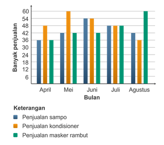
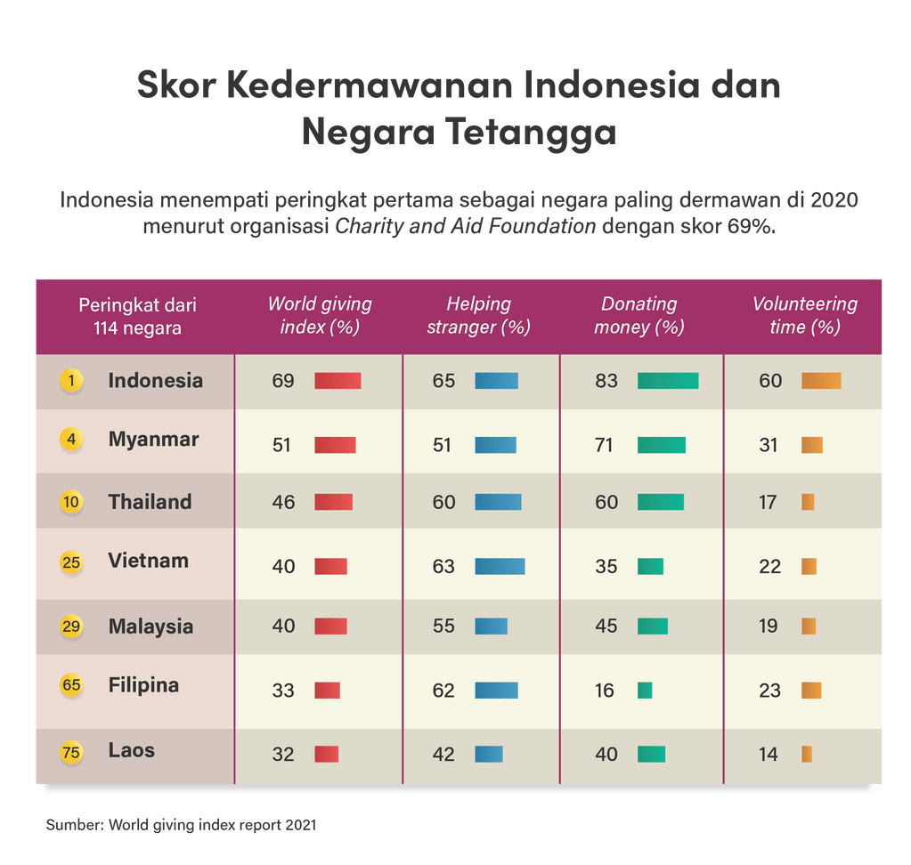
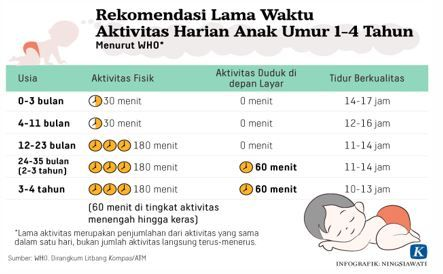

Materi: Penalaran Umum (PU) | Total: 10 Soal
Perhatikan kalimat-kalimat berikut!
Semua rumah di kompleks X memiliki garasi dan taman kecil.
Zeny berada di rumah yang memiliki garasi dan pekarangan kecil.
Simpulan yang PALING TEPAT adalah ...
Berdasarkan logika silogisme, jika semua rumah di kompleks X memiliki garasi dan taman (pekarangan) kecil, dan Zeny berada di rumah dengan ciri-ciri tersebut, maka probabilitas kesimpulan yang paling tepat sesuai opsi yang ada adalah Zeny berada di dalam kompleks X. Meskipun secara logika formal ketat ini adalah fallacy of affirming the consequent (karena rumah di kompleks lain juga bisa memiliki garasi), dalam konteks soal PU UTBK tipe ini, kesimpulan induktif yang diarahkan adalah B.
Konsumen saat ini menunjukkan minat yang lebih besar terhadap produk-produk perawatan kecantikan. Tingkat penjualan produk ini meningkat lebih cepat daripada dua kategori utama produk kecantikan lainnya: kosmetik dan minyak wangi. Penyebab gejala ini adalah keinginan untuk tetap tampil muda dan alamiah, dengan kulit yang menarik.
Pernyataan berikut yang paling SESUAI dengan isi teks tersebut adalah ....
Pada kalimat kedua disebutkan: "...meningkat lebih cepat daripada dua kategori utama produk kecantikan lainnya: kosmetik dan minyak wangi." Hal ini mengindikasikan bahwa selain "produk perawatan kecantikan", masih ada minimal dua kategori lain, sehingga total terdapat sedikitnya tiga kelompok produk kecantikan.
Toko X menjual beragam produk perawatan rambut merek A. Grafik menunjukkan penjualan produk sampo (Biru), kondisioner (Oranye), dan masker rambut (Hijau) dari bulan April sampai bulan Agustus tahun 2022.

| Bulan | Sampo | Kondisioner | Masker Rambut |
|---|---|---|---|
| April | 36 | 48 | 36 |
| Mei | 42 | 60 | 42 |
| Juni | 54 | 54 | 42 |
| Juli | 48 | 48 | 48 |
| Agustus | 42 | 36 | 60 |
Berdasarkan data grafik tersebut, penurunan banyaknya penjualan paling besar terjadi pada penjualan ....
Hitung selisih penurunan bulan ke bulan untuk opsi yang tersedia:
A. Sampo Juli: 54 ke 48 = turun 6
B. Sampo Agustus: 48 ke 42 = turun 6
C. Kondisioner Juni: 60 ke 54 = turun 6
E. Kondisioner Agustus: 48 (di Juli) ke 36 (di Agustus) = turun 12 (Penurunan paling besar).
Jumlah siswa perempuan yang mengunjungi ruang BK untuk konsultasi SNBP selama lima hari berurutan adalah 16, 19, 24, 27, dan 32. Sementara itu, jumlah siswa laki-laki yang berkunjung pada lima hari yang sama adalah 8, 8, 9, 11, dan 14. Jika tren kunjungan tersebut bersifat konstan, jumlah siswa yang berkunjung ke ruang BK pada hari ke-6 sebanyak ... orang.
Mari analisis pola bilangannya (barisan aritmatika bertingkat):
Perempuan: 16, 19, 24, 27, 32.
Pola penambahan: +3, +5, +3, +5. Berarti hari ke-6 adalah +3 dari hari ke-5. (32 + 3 = 35).
Laki-laki: 8, 8, 9, 11, 14.
Pola penambahan: +0, +1, +2, +3. Berarti hari ke-6 penambahannya adalah +4. (14 + 4 = 18).
Banyak sekali pengendara sepeda motor yang melakukan pelanggaran dengan memasuki jalur khusus bus. Itulah mengapa banyak polisi yang melakukan tilang terhadap pengendara sepeda motor.
Manakah pernyataan berikut yang paling MENJELASKAN AKIBAT dari sepeda motor yang menggunakan jalur bus berdasarkan teks tersebut?
Logika kausalitas: Jalur bus adalah lajur eksklusif untuk bus. Jika banyak sepeda motor yang masuk ke jalur tersebut, secara logika akibat langsung di lapangan adalah terganggunya operasional/laju perjalanan bus di jalurnya sendiri. Penilangan polisi adalah respons (tindakan), sedangkan akibat fisik yang terjadi pada lajur tersebut adalah terganggunya bus.
Perhatikan pernyataan berikut!
Simpulan yang tepat dari kedua pernyataan tersebut adalah ...
Berdasarkan hukum logika silogisme (Modus Ponens):
Premis 1: Jika P (sering pakai lensa kontak) maka Q (berisiko iritasi mata).
Premis 2: P (Sinta sering pakai lensa kontak).
Simpulan: Q (Sinta berisiko menderita iritasi mata).
Berikut adalah infografik terkait kedermawanan beberapa negara di Asia Tenggara.

| Peringkat dari 114 negara | Negara | World giving index (%) |
|---|---|---|
| 1 | Indonesia | 69 |
| 4 | Myanmar | 51 |
| 10 | Thailand | 46 |
| 25 | Vietnam | 40 |
| 29 | Malaysia | 40 |
| 65 | Filipina | 33 |
| 75 | Laos | 32 |
Berdasarkan infografik tersebut, Vietnam menempati urutan ke- ... sebagai negara paling dermawan di dunia.
Cukup lihat kolom pertama "Peringkat dari 114 negara". Untuk negara Vietnam (baris keempat), angkanya adalah 25.
(Petikan Paragraf 4)
Pernyataan resmi yang dikeluarkan oleh AAP tersebut merekomendasikan bahwa penggunaan media digital tidak boleh lebih dari satu jam per hari bagi anak usia dua hingga lima tahun. [...] Selain itu, AAP juga menyarankan agar tidak menggunakan media digital sebagai satu-satunya cara untuk menenangkan anak. Hal tersebut berpengaruh terhadap kemampuan anak dalam mengelola emosi.

Berdasarkan paragraf 4, jika penggunaan media digital digunakan lebih dari satu jam per hari bagi anak usia dua hingga lima tahun, manakah di bawah ini simpulan yang PALING MUNGKIN benar?
Berdasarkan kalimat penutup pada paragraf 4: "Selain itu, AAP juga menyarankan agar tidak menggunakan media digital sebagai satu-satunya cara untuk menenangkan anak. Hal tersebut berpengaruh terhadap kemampuan anak dalam mengelola emosi." Penggunaan berlebih pada anak memiliki dampak langsung pada kemampuannya mengelola emosi.
Perhatikan pernyataan berikut!
Sebagian peserta lomba adalah anak TK.
Semua anak TK menggunakan pakaian khusus.
Berdasarkan dua pernyataan di atas, simpulan yang paling tepat adalah ...
Diagram himpunan (Euler):
Himpunan Peserta Lomba beririsan dengan Anak TK (karena sebagian peserta adalah anak TK).
Himpunan Anak TK berada di dalam himpunan Pengguna Pakaian Khusus (karena semua anak TK memakai pakaian khusus).
Karena ada anak TK yang ikut lomba, maka anak TK tersebut pasti memakai pakaian khusus. Jadi, ada pengguna pakaian khusus yang menjadi peserta lomba. Simpulan yang tepat: "Sebagian yang menggunakan pakaian khusus adalah peserta lomba."
Sebuah tempat parkir memasang tarif pada 2 jam pertama Rp5.000,00 untuk mobil dan Rp3.000,00 untuk motor. Tarif pada jam selanjutnya Rp2.000,00 untuk mobil dan Rp1.500,00 untuk motor. Jika Danu memarkir mobil sedangkan Dani memarkir motor selama mereka berkunjung dari jam 9 sampai jam 5 sore, maka biaya parkir yang harus dibayar oleh Dani dan Danu masing-masing adalah ....
Durasi parkir: Pukul 09.00 hingga 17.00 = 8 Jam.
Parkir Motor Dani:
2 Jam pertama: Rp 3.000
Sisa jam (6 jam) x Rp 1.500 = Rp 9.000
Total Dani = Rp 12.000
Parkir Mobil Danu:
2 Jam pertama: Rp 5.000
Sisa jam (6 jam) x Rp 2.000 = Rp 12.000
Total Danu = Rp 17.000
Pertanyaan meminta urutan Dani dan Danu masing-masing, maka urutannya adalah Rp12.000,00 dan Rp17.000,00.